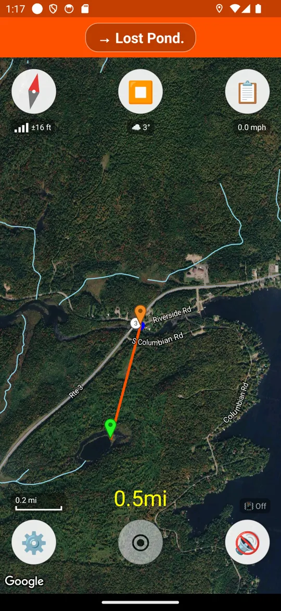
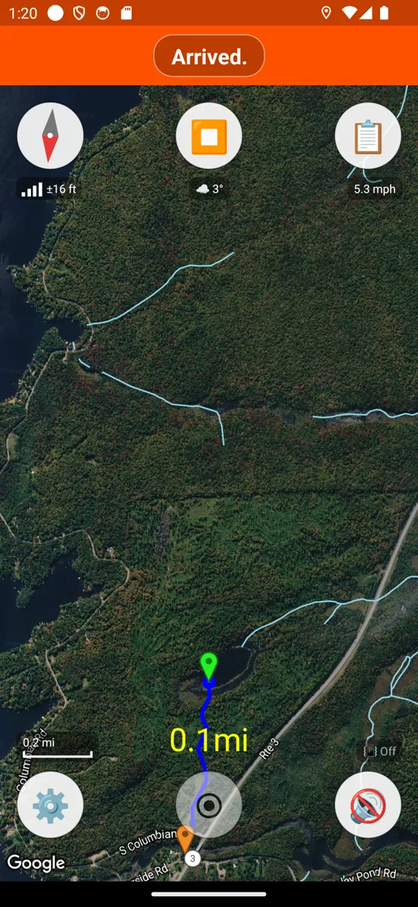
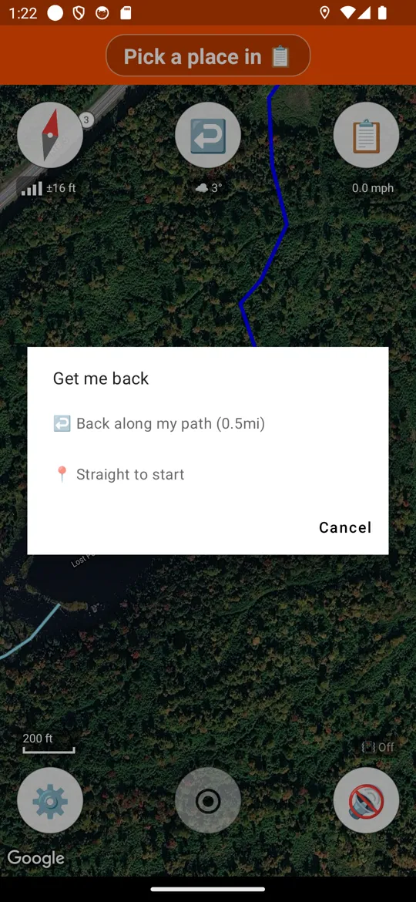
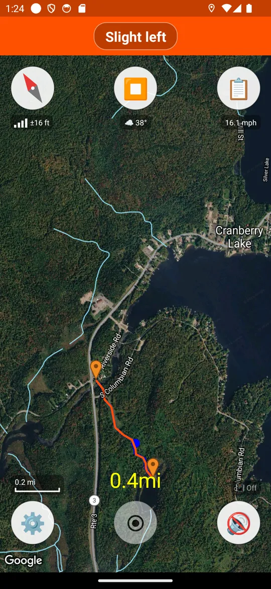
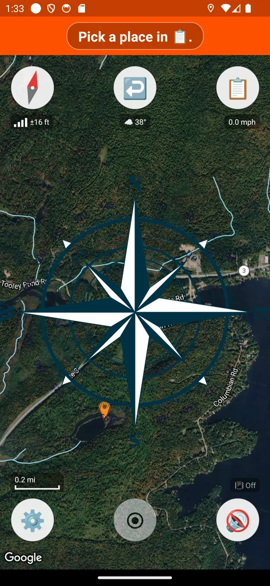
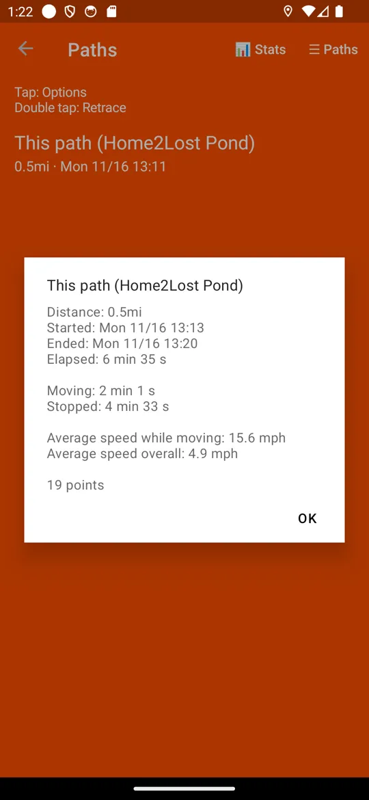

Drop a pin and GetMeThere tells you which way to go: “Straight”, “Slight left”, “Turn around”, “Arrived”. Your phone stays in your pocket, and your eyes stay on where you're going.
Android · Free to try · One-time $1.95 for the Full version, no subscription
A real walk: phone in a pocket, spoken directions all the way to the pin, then back along the same path.






Three steps. No address, no roads needed.
Tap the map, take a photo where you stand, import a GPX or KML file, or open a place shared from Google Maps.
Start walking. Directions adjust to your pace and get more frequent as you close in.
“Straight”, “Left”, “Sharp right”, “Turn around”, “Arrived”. Add vibration patterns if you'd rather feel it.
Map apps follow roads. GetMeThere takes you to the exact point you choose.
A pin drops where you start, so “📍 Straight to start” brings you back from the festival, stadium or beach.
Your path is recorded as you walk. “↩️ Back along my path” retraces it, skipping small loops.
Import GPX and LOC files from geocaching.com, with details and hints, and walk right up to the cache.
Mark the good spot once and find it again next season, sorted into your own folders.
Two phones guide to each other within about 100 m over Bluetooth and Wi-Fi, with no cell signal or internet.
Voice-first and built to work with TalkBack: buttons say what they do, and instructions are read out.
Follow or retrace any path with “Off route” and “Back on route” warnings, and see distance, time moving and average speed in 📊 Stats.
KML, KMZ and GPX in and out: Google Earth, My Maps, Strava, Garmin, AllTrails. Link a My Maps map to a folder and refresh it.
Rain in the next three hours (US) and a spoken heads-up 30 minutes before sunset, with your distance back to the start.
No account and no ads. Pins and paths live on your phone, and one file backs up everything. Privacy policy
Try it free. Buy once if you keep using it.
GetMeThere is for walking and biking, not driving. Directions are approximate: GPS can be tens of meters off, and the app doesn't know roads, paths or obstacles. Watch where you're going and obey traffic rules and signs. At car speed the map is covered and only the voice goes on.